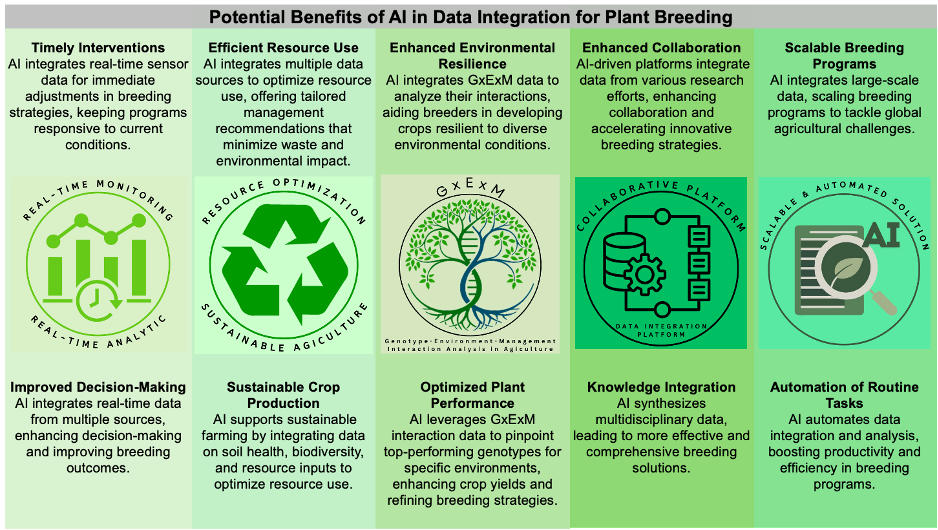

Research Across Observation Scales
My research connects sensing and data analysis across observation scales, from internal plant and soil structures to Earth observation, to address questions in digital and precision agriculture.
X-ray microCT
Inside plants and soil
I combine X-ray imaging and software analysis to characterize internal plant tissues and soil structure.
Proximal Sensing
Around a plant
I use close-range imaging, spectroscopy, and chemical sensing to measure plant traits, assess forage quality, and detect signs of disease.
- Smartphone-based weed detection in vineyards In development
Sensors and technology
- Hyperspectral spectroscopy, LiDAR, RGB-D cameras, and thermal cameras
- Volatile organic compound (VOC) sampling and analysis with GC-MS and GC-FID
Analysis methods
- Spectral feature selection and regression
- Machine learning and statistical analysis
- Image and point-cloud segmentation; voxel-based volume estimation
IoT Sensing
Across crop rows
I develop field sensing systems and analysis tools to monitor crop growth, predict yield, and study microclimates.
- Soil moisture at multiple depths and vine growth In development
Sensors and technology
- Field cameras and sensors for temperature and soil moisture
- Raspberry Pi, Arduino, Node-RED, and Microsoft Azure
- Remote desktop tools: AnyDesk and RustDesk
Analysis methods
- Yield prediction from time-series data: random forest and long short-term memory (LSTM) models
- Microclimate and cold-hardiness modeling: linear mixed-effects models and physiological simulation
UAV Imaging
Above a field
I use UAV imagery to detect individual plants, reconstruct crop structure in 3D, and estimate biomass and yield.
Sensors and technology
- UAVs with RGB, multispectral, and thermal cameras, and LiDAR
- Photogrammetry and geospatial tools: Pix4D, OpenDroneMap, CloudCompare, and QGIS
- High-performance computing for MatchPlant: SCINet Scientific Computing
Analysis methods
- Object detection and geospatial analysis
- Deep learning and computer vision
- 3D point-cloud analysis and machine learning
Satellite Sensing
Earth observation
I analyze satellite observations to assess crop performance, monitor pasture productivity, and track drought over time.
Sensors and technology
- Optical satellite imagery and synthetic aperture radar (SAR) observations
- MODIS time series and Google Earth Engine
Analysis methods
- Spectral indices and data integration
- Spatial and temporal analysis; predictive modeling
Connecting measurement with understanding
Across these platforms, I use machine learning to predict plant traits and yield, and deep learning to detect objects and segment tissues. Time-series analysis and statistical and physiological models help interpret changes in crop growth and environmental conditions.
Publications across platforms
- Affordable phenomics for plant breedingAffordable phenomics: Expanding access to enhancing genetic gain in plant breeding
- AI-supported data integration for plant breedingImproving plant breeding through AI-supported data integration

Research summary - Remote sensing of tree architecturePhenotyping architecture traits of tree species using remote sensing techniques